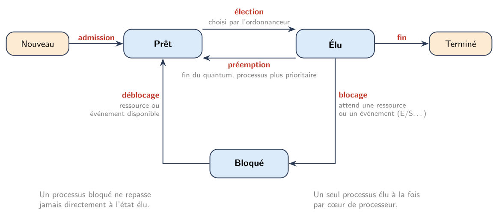
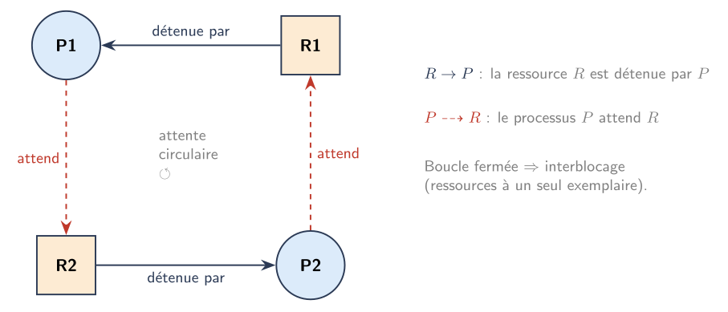

📖 Cours Gestion des processus et des ressources par un système d'exploitation⚓︎
🎯 Programme et objectifs⚓︎
Programme de Terminale – rubrique « Architectures matérielles, systèmes d'exploitation et réseaux »
| Contenus | Capacités attendues | Commentaires |
|---|---|---|
| Gestion des processus et des ressources par un système d'exploitation. | Décrire la création d'un processus, l'ordonnancement de plusieurs processus par le système. Mettre en évidence le risque de l'interblocage (deadlock). | À l'aide d'outils standard, il s'agit d'observer les processus actifs ou en attente sur une machine. Une présentation débranchée de l'interblocage peut être proposée. |
À la fin de ce chapitre, je sais…
- distinguer un programme d'un processus et identifier un processus par son PID et son PPID ;
- observer les processus d'une machine avec des outils standard (
ps,pstree,top) et en terminer un aveckill; - décrire la création d'un processus (lancement d'un programme, appel système
fork) ; - décrire les états d'un processus et nommer les transitions entre ces états ;
- construire le chronogramme de l'ordonnancement de plusieurs processus, pour un algorithme vu en cours (FIFO, tourniquet, priorités) ou décrit dans un énoncé, et calculer des temps de séjour et d'attente ;
- programmer la simulation d'un ordonnancement à l'aide d'une file ;
- reconnaître un interblocage, le représenter par un schéma d'allocation des ressources et proposer un moyen de l'éviter.
Prérequis
- Première : fonctions d'un système d'exploitation, commandes de base du terminal, droits et permissions.
- Terminale : structure de file chapitre IV (Piles & Files).
1. 📚 Du programme au processus⚓︎
Définitions
- Un programme est une suite d'instructions statique, stockée dans un fichier (exécutable ou script) sur la mémoire de masse.
- Un processus est un programme en cours d'exécution. C'est une entité dynamique : il possède, en plus du code, ses données en mémoire, une pile d'appels, et un contexte (valeurs des registres du processeur, dont le compteur de programme qui indique la prochaine instruction).
Un même programme peut donner naissance à plusieurs processus simultanés : ouvrir deux fois un terminal crée deux processus distincts exécutant le même programme.
Le système d'exploitation identifie chaque processus par un entier unique, le PID (Process IDentifier). Tout processus, sauf le tout premier, est créé par un autre processus, son père. Le PPID (Parent PID) est le PID de ce père. Les processus forment donc une arborescence, dont la racine est le premier processus lancé au démarrage, de PID 1 (systemd sur la plupart des distributions Linux actuelles, historiquement init).
2. 🗂️ Le système d'exploitation, gestionnaire de ressources⚓︎
En Première, on a vu que le système d'exploitation (SE) sert d'intermédiaire entre les applications et le matériel. Le programme de Terminale précise ce rôle : le SE a pour fonction de charger les programmes depuis la mémoire de masse et de lancer leur exécution en leur créant des processus, de gérer l'ensemble des ressources, de traiter les interruptions et les entrées-sorties, et d'assurer la sécurité globale du système.
Définition – Ressource
On appelle ressource tout ce dont un processus a besoin pour s'exécuter : temps de processeur, mémoire, fichier, périphérique (imprimante, carte réseau…).
Certaines ressources ne peuvent être utilisées que par un seul processus à la fois (une imprimante en cours d'impression, un fichier ouvert en écriture exclusive) : on dit qu'elles sont en exclusion mutuelle. C'est à leur sujet que naissent les difficultés de ce chapitre.
La partie du SE qui s'exécute avec tous les privilèges et gère ces ressources s'appelle le noyau (kernel).
3. 🖥️ Observer les processus d'une machine⚓︎
Activité 1 – sur machine, 30 min
Ouvrir un terminal et exécuter les commandes suivantes. Noter à chaque fois ce qu'on observe.
ps: liste les processus lancés depuis ce terminal. Repérer le PID du shell (bash).ps -ef: liste tous les processus. Repérer les colonnesUID,PID,PPID,CMD. Vérifier que le PPID de la commandepsest le PID du shell.pstree -p: affiche l'arborescence des processus avec leurs PID. Quelle est la racine ?ps -u $USER: liste les processus appartenant à l'utilisateur courant.top(ouhtops'il est installé) : affichage rafraîchi en temps réel. Touches utiles :P(tri par occupation du processeur),M(tri par mémoire),h(aide),q(quitter).- Taper
sleep 300 &: le shell lance un processus qui « dort » 300 secondes et affiche son PID. Le retrouver avecps, puis le terminer aveckill PID(en remplaçantPIDpar sa valeur). Vérifier avecpsqu'il a disparu.
Questions :
- Dans
top, combien de processus sont dans l'étatR? combien dans l'étatS? Que peut-on en conclure sur l'activité réelle de la machine ? - Essayer
kill 1. Que se passe-t-il ? Pourquoi ?
La colonne STAT de ps (ou S de top) indique l'état du processus. Les principaux codes :
| Code | Signification |
|---|---|
R |
en cours d'exécution, ou prêt à s'exécuter (running) |
S |
endormi, en attente d'un événement : saisie, fin d'un délai, données réseau… (sleeping) |
D |
en attente non interruptible, typiquement la fin d'une entrée-sortie sur disque |
T |
stoppé (par exemple après Ctrl＋Z) |
Z |
zombie : terminé, mais pas encore « récupéré » par son père |
I |
processus du noyau inactif (idle) |
Terminer un processus
La commande kill PID demande au système de terminer le processus désigné. On ne peut terminer que ses propres processus, sauf en tant qu'administrateur.
4. 🍴 Créer un processus⚓︎
Un processus est créé :
- par le système lui-même, au démarrage (services, gestionnaires de périphériques…) ;
- par l'utilisateur, à chaque lancement d'une application (double-clic, commande dans un terminal) : c'est alors le processus du gestionnaire de fenêtres ou du shell qui crée le nouveau processus ;
- par programmation, au moyen d'un appel système.
Définition – Appel système
Un appel système est une demande adressée par un processus au noyau, pour que celui-ci réalise à sa place une opération qui nécessite ses privilèges (créer un processus, lire un fichier, envoyer des données sur le réseau…).
La création d'un processus est donc toujours réalisée par le noyau, mais n'importe quel processus peut la demander.
Sous les systèmes de type UNIX (Linux, macOS), l'appel système fork crée un processus fils qui est une copie du processus père (même code, copie des données), à une différence près : la valeur renvoyée par fork.
Valeur renvoyée par fork
- dans le père,
forkrenvoie le PID du fils (un entier strictement positif) ; - dans le fils,
forkrenvoie 0.
Après l'appel, deux processus exécutent la suite du code : c'est en testant cette valeur que chacun sait qui il est.
En Python, le module os donne accès à ces appels système.
| creer_processus.py | |
|---|---|
1 2 3 4 5 6 7 8 9 10 11 12 13 14 15 16 17 | |
Activité 2 – sur machine, 30 min
- Enregistrer le script dans un fichier
creer_processus.pyet le lancer depuis un terminal :python3 creer_processus.py. Vérifier que le PPID du fils est égal au PID du père. -
Pendant les 30 secondes de pause, exécuter dans un second terminal
pgrep -af creer_processus. Combien de processus voit-on ? Dans quel état sont-ils ?Conseil : taper la commande dans le second terminal avant de lancer le script, puis la valider dès que le script tourne.
-
Expliquer pourquoi la ligne
[Père] PID = …n'est affichée qu'une seule fois alors que la ligneif pid == 0est exécutée deux fois. - Facultatif. Remplacer les deux lignes
pid_fini, statut = os.wait()etprint(...)du père partime.sleep(60)(le père doit dormir plus longtemps que le fils). Relancer le script et, une fois le message[Fils] je me termineaffiché, observer les processus avecps -o pid,ppid,stat,cmd -u $USER(le fils apparaît alors sous le nom[python3] <defunct>). Dans quel état est-il ? Pourquoi n'a-t-il pas disparu ?
5. ⏱️ États et ordonnancement des processus⚓︎
5.1 Pourquoi ordonnancer ?⚓︎
Un cœur de processeur n'exécute qu'un seul processus à la fois. Pour donner l'illusion que de nombreux processus s'exécutent simultanément, le SE fait alterner très rapidement les processus sur le processeur (toutes les quelques millisecondes). Le composant du noyau qui choisit, à chaque instant, quel processus obtient le processeur s'appelle l'ordonnanceur (scheduler).
Quand l'ordonnanceur retire le processeur à un processus pour le donner à un autre, le noyau sauvegarde le contexte du premier et restaure celui du second : c'est la commutation de contexte. Elle prend un peu de temps, ce qui explique qu'on ne peut pas alterner infiniment vite.
5.2 Les états d'un processus⚓︎

Les trois états principaux
- Prêt : le processus dispose de tout ce qu'il lui faut, sauf du processeur. Il attend dans la file des processus prêts.
- Élu (ou en exécution) : il occupe le processeur.
- Bloqué (ou en attente d'une ressource) : il ne peut pas continuer tant qu'un événement ne s'est pas produit (fin d'une lecture sur le disque, saisie clavier, libération d'une ressource…).
Les transitions à retenir :
- élection (prêt → élu) : l'ordonnanceur choisit ce processus ;
- préemption (élu → prêt) : l'ordonnanceur reprend le processeur (fin du temps accordé, arrivée d'un processus plus prioritaire) ;
- blocage (élu → bloqué) : le processus demande une ressource indisponible ou attend un événement ;
- déblocage (bloqué → prêt) : la ressource ou l'événement devient disponible. Le processus ne repasse jamais directement de bloqué à élu : il retourne dans la file des prêts.
Un processus bloqué ne consomme pas de temps processeur : sur la plupart des machines, l'immense majorité des processus sont bloqués en attente d'un événement.
Le vocabulaire varie selon les auteurs
Les sujets d'examen n'emploient pas toujours les mêmes mots : un processus bloqué peut être dit en attente ; un processus préempté peut être dit suspendu ; un processus élu peut être dit en cours d'exécution. Un énoncé définit toujours ses termes : il faut appliquer ses définitions, même si elles diffèrent de celles du cours.
À faire
Les codes affichés par ps (section 3) correspondent aux états du modèle :
Code ps |
État du modèle |
|---|---|
R |
élu ou prêt : ps ne les distingue pas |
S, D, I |
bloqué |
Z |
terminé, mais pas encore supprimé de la table des processus |
Question : pourquoi ps affiche-t-il presque toujours au moins un processus à l'état R ?
5.3 Algorithmes d'ordonnancement⚓︎
On décrit chaque processus par sa date d'arrivée et sa durée d'exécution, comptées en cycles. On représente l'ordonnancement par un chronogramme : un tableau qui indique, cycle par cycle, quel processus est élu.
Cycles et dates
Dans ce chapitre, un cycle est une unité de temps abstraite : l'intervalle pendant lequel un processus s'exécute avant que l'ordonnanceur puisse choisir de nouveau. Ce n'est pas le cycle d'horloge du processeur vu en Première : en réalité, un tel intervalle dure quelques millisecondes, soit des millions de cycles d'horloge. Les énoncés parlent aussi de « cycles CPU » ou de millisecondes ; seul compte le découpage du temps en unités égales. Ne pas confondre le cycle avec le quantum du tourniquet : le quantum est une durée maximale d'exécution, exprimée en cycles (par exemple « un quantum de 2 cycles ») ; les deux ne coïncident que pour un quantum de 1 cycle.
Le cycle numéro \(k\) s'étend de la date \(k\) à la date \(k+1\). Un processus qui s'exécute pendant le cycle 8 se termine donc à la date 9 : c'est cette date qui sert à calculer le temps de séjour.
Mesures de performance
Pour un processus arrivé à la date \(a\), de durée \(d\), qui se termine à la date \(f\) :
Selon les énoncés, le temps de séjour est parfois appelé temps d'exécution ou temps de traitement.
Méthode – appliquer un algorithme d'ordonnancement décrit dans un énoncé
Les sujets rappellent toujours les règles de l'algorithme, y compris pour les algorithmes du cours, et en proposent parfois d'autres. Pour construire le chronogramme :
- relire les règles : comment l'ordonnanceur choisit-il l'élu ? y a-t-il préemption ? quand (à chaque cycle, à la fin d'un quantum, à l'arrivée d'un processus) ?
- repérer les conventions : que se passe-t-il en cas d'égalité ? un processus qui arrive à la date \(t\) peut-il être élu dès la date \(t\) ? passe-t-il devant un processus préempté au même moment ?
- avancer cycle par cycle, en notant à chaque date les processus prêts (et l'état de la file s'il y en a une) avant de choisir l'élu ;
- vérifier que le nombre de cases occupées par chaque processus est égal à sa durée.
On utilise le même exemple pour comparer les algorithmes :
| Processus | Arrivée | Durée | Priorité |
|---|---|---|---|
| P1 | 0 | 5 | 3 |
| P2 | 1 | 3 | 1 |
| P3 | 2 | 1 | 2 |
La colonne Priorité ne sert que pour le dernier algorithme.
Premier arrivé, premier servi (FIFO)⚓︎
Les processus sont exécutés jusqu'au bout, dans leur ordre d'arrivée. La file des prêts est une file (First In, First Out). Il n'y a pas de préemption.
| Cycle | 0 | 1 | 2 | 3 | 4 | 5 | 6 | 7 | 8 |
|---|---|---|---|---|---|---|---|---|---|
| Élu | P1 | P1 | P1 | P1 | P1 | P2 | P2 | P2 | P3 |
| Fin | Séjour | Attente | |
|---|---|---|---|
| P1 | 5 | 5 | 0 |
| P2 | 8 | 7 | 4 |
| P3 | 9 | 7 | 6 |
P3 ne dure qu'un cycle mais attend 6 cycles : un processus court est pénalisé par un long processus arrivé avant lui.
Tourniquet (Round Robin)⚓︎
Chaque processus élu reçoit le processeur pour une durée maximale fixée, le quantum. S'il n'a pas fini au bout du quantum, il est préempté et remis à la fin de la file des prêts.
Convention à préciser
Quand un processus arrive au moment même où un autre est préempté, il faut fixer qui entre en premier dans la file. On adopte ici la convention la plus courante : le nouvel arrivant passe devant le processus préempté. Un énoncé doit toujours préciser la convention retenue ; en son absence, il faut l'énoncer dans sa réponse.
Avec un quantum de 2 cycles :
| Cycle | 0 | 1 | 2 | 3 | 4 | 5 | 6 | 7 | 8 |
|---|---|---|---|---|---|---|---|---|---|
| Élu | P1 | P1 | P2 | P2 | P3 | P1 | P1 | P2 | P1 |
Détail de l'évolution de la file des prêts
- Date 0 : file
[P1]→ P1 élu pour les cycles 0 et 1. - P2 arrive à la date 1, P3 à la date 2 ; à la date 2, P1 est préempté et placé après eux : file
[P2, P3, P1]. - Date 2 : P2 élu (reste 3 cycles), exécute 2 cycles → reste 1, file
[P3, P1, P2]. - Date 4 : P3 élu, il se termine à la date 5 → file
[P1, P2]. - Date 5 : P1 élu (reste 3 cycles), exécute 2 cycles → reste 1, file
[P2, P1]. - Date 7 : P2 se termine à la date 8 ; date 8 : P1 se termine à la date 9.
| Fin | Séjour | Attente | |
|---|---|---|---|
| P1 | 9 | 9 | 4 |
| P2 | 8 | 7 | 4 |
| P3 | 5 | 3 | 2 |
Le temps de séjour moyen est le même que pour FIFO (\(\frac{19}{3}\)), mais l'attente est mieux répartie : le processus court P3 attend 2 cycles au lieu de 6, et chaque processus obtient rapidement le processeur une première fois. C'est pourquoi les systèmes interactifs (ordinateurs de bureau, téléphones) utilisent des variantes du tourniquet.
Ordonnancement par priorités (avec préemption)⚓︎
Chaque processus reçoit un numéro de priorité : plus il est petit, plus le processus est prioritaire. À chaque cycle, l'ordonnanceur élit le processus prêt le plus prioritaire. Si un processus plus prioritaire que l'élu arrive, l'élu est préempté ; il reprendra quand il sera de nouveau le plus prioritaire.
| Cycle | 0 | 1 | 2 | 3 | 4 | 5 | 6 | 7 | 8 |
|---|---|---|---|---|---|---|---|---|---|
| Élu | P1 | P2 | P2 | P2 | P3 | P1 | P1 | P1 | P1 |
Justification cycle par cycle
- Cycle 0 : seul P1 est arrivé, il est élu.
- Cycle 1 : P2 arrive avec la priorité 1, plus forte que celle de P1 (3) : P1 est préempté, P2 est élu.
- Cycles 2 et 3 : P3 arrive (priorité 2) mais P2 (priorité 1) reste le plus prioritaire.
- Cycle 4 : P2 est terminé ; P3 (priorité 2) passe devant P1 (priorité 3).
- Cycles 5 à 8 : seul P1 reste, il termine ses 4 cycles restants.
| Fin | Séjour | Attente | |
|---|---|---|---|
| P1 | 9 | 9 | 4 |
| P2 | 4 | 3 | 0 |
| P3 | 5 | 3 | 2 |
Le processus le plus prioritaire n'attend jamais. En contrepartie, si des processus prioritaires arrivent sans cesse, un processus peu prioritaire peut ne jamais être élu : on parle de famine. Sous Linux, la commande nice permet de lancer un programme avec une priorité plus faible.
5.4 Simuler le tourniquet avec une file⚓︎
La file des processus prêts du tourniquet est une file au sens du chapitre IV (Piles & Files) : on défile le processus élu en tête, et on enfile en queue les nouveaux arrivants et les processus préemptés. On peut donc simuler l'ordonnanceur en Python.
Activité 3 – programmer le tourniquet, sur machine, 40 min
Chaque processus est représenté par un dictionnaire ; la clé 'reste' donne le nombre de cycles qu'il lui reste à exécuter. On dispose d'une classe File et d'une fonction admettre qui enfile les processus arrivant à une date donnée.
| tourniquet.py | |
|---|---|
1 2 3 4 5 6 7 8 9 10 11 12 13 14 15 16 17 18 19 20 21 22 23 24 25 26 27 28 29 30 31 32 33 34 35 36 37 38 39 40 41 42 43 44 45 46 47 48 49 50 | |
- Recopier et compléter les quatre lignes marquées
# à compléter. -
Tester avec l'exemple du cours et vérifier que l'on obtient le chronogramme du tourniquet :
1 2 3 4
procs = [{'nom': 'P1', 'arrivee': 0, 'reste': 5}, {'nom': 'P2', 'arrivee': 1, 'reste': 3}, {'nom': 'P3', 'arrivee': 2, 'reste': 1}] print(tourniquet(procs, 2)) -
Quelle convention d'arrivée ce programme applique-t-il ? Indiquer les lignes qui l'imposent.
- Relancer avec un quantum de 100, après avoir recréé
procs. Quel algorithme retrouve-t-on ? Justifier. - Pourquoi faut-il recréer
procsavant chaque appel ? - Pour aller plus loin. Écrire une fonction
temps_sejour(chronogramme, processus)qui renvoie un dictionnaire associant à chaque processus son temps de séjour.
6. 🔒 Le risque d'interblocage⚓︎
Activité 4 – débranchée, 20 min (avant de lire la suite)
Deux élèves jouent les processus, deux objets (un feutre, une feuille) jouent les ressources. Chaque « processus » doit écrire son prénom sur la feuille avec le feutre, et ne rend un objet qu'à la fin de sa tâche.
- Faire jouer la scène en laissant chaque élève saisir d'abord un objet différent. Que se passe-t-il ?
- Décrire la situation par un schéma : qui détient quoi ? qui attend quoi ?
- Proposer une règle qui rend le blocage impossible, et la tester.
6.1 Une situation d'attente circulaire⚓︎
L'activité précédente se formalise ainsi. Deux processus P1 et P2 ont tous deux besoin de deux ressources en exclusion mutuelle R1 et R2 pour terminer leur travail :
- P1 obtient R1 ;
- P2 obtient R2 ;
- P1 demande R2 : elle est détenue par P2, P1 passe à l'état bloqué ;
- P2 demande R1 : elle est détenue par P1, P2 passe à l'état bloqué.
Chacun attend une ressource que l'autre ne libérera qu'après avoir terminé… ce qui n'arrivera jamais.
Définition – Interblocage
Un interblocage (deadlock) est une situation dans laquelle plusieurs processus sont bloqués définitivement, chacun attendant une ressource détenue par un autre processus du groupe.
On représente la situation par un schéma d'allocation des ressources : une flèche pleine \(R \to P\) signifie « la ressource \(R\) est détenue par \(P\) », une flèche en pointillés \(P \dashrightarrow R\) signifie « le processus \(P\) attend \(R\) ».

En suivant les flèches à partir de P1, on passe par R2, P2, R1… et on revient à P1 : chaque processus attend un autre processus de la chaîne, qui attend lui-même… C'est une attente circulaire. Lorsque chaque ressource n'existe qu'en un seul exemplaire, une attente circulaire dans le schéma d'allocation signifie que les processus concernés sont en interblocage.
6.2 Éviter l'interblocage⚓︎
La méthode la plus simple consiste à imposer que tous les processus demandent les ressources dans le même ordre (toujours R1 avant R2). Aucune attente circulaire ne peut alors se former : dans l'exemple, P2 ne pourrait pas obtenir R2 sans détenir déjà R1.
Pour aller plus loin : les quatre conditions de Coffman (non exigible)
Un interblocage ne peut se produire que si les quatre conditions suivantes sont réunies simultanément (Coffman, 1971) :
- exclusion mutuelle : les ressources ne sont pas partageables ;
- détention et attente : un processus garde ses ressources pendant qu'il en attend d'autres ;
- pas de réquisition : on ne peut pas retirer de force une ressource à un processus ;
- attente circulaire : il existe une chaîne de processus qui s'attendent mutuellement et qui se referme sur elle-même.
Il suffit d'empêcher une de ces conditions pour rendre l'interblocage impossible. Imposer un ordre unique d'acquisition empêche la quatrième.
Les systèmes d'exploitation généralistes comme Linux ou Windows ne détectent pas les interblocages entre processus utilisateurs : c'est au programmeur de les éviter. En revanche, les systèmes de gestion de bases de données détectent ceux qui surviennent entre transactions et en annulent une.
Activité 5 – mettre en évidence l'interblocage sur machine, 25 min
Le module multiprocessing crée de vrais processus. Il fournit aussi des verrous (Lock) : un verrou est une ressource logicielle, créée par le programmeur, qu'un seul processus peut détenir à la fois. Un processus qui demande un verrou déjà détenu est bloqué jusqu'à sa libération. Les verrous jouent donc ici le rôle de ressources en exclusion mutuelle. L’attente est limitée (5 s pour P1, 10 s pour P2).
| interblocage_demo.py | |
|---|---|
1 2 3 4 5 6 7 8 9 10 11 12 13 14 15 16 17 18 19 20 21 22 | |
- Exécuter le programme. Pourquoi un des deux processus finit-il quand même par obtenir les deux ressources ?
- Que se passerait-il sans le paramètre
timeout? - Modifier une seule ligne pour que l'interblocage devienne impossible.
7. 🔭 Pour aller plus loin (hors programme)⚓︎
Signaux
La commande kill (section 3) fonctionne en envoyant un signal au processus. Un processus peut recevoir des signaux envoyés par le noyau ou par un autre processus :
kill PIDenvoie par défautSIGTERM, qui demande au processus de se terminer (il peut d'abord enregistrer son travail) ;kill -KILL PIDenvoieSIGKILL, qui force sa terminaison ;- Ctrl＋C envoie
SIGINTau processus au premier plan.
Seuls certains numéros de signaux sont fixés par la norme POSIX (2 pour SIGINT, 9 pour SIGKILL et 15 pour SIGTERM en font partie) ; d'autres varient selon les systèmes. Mieux vaut donc désigner les signaux par leur nom.
🧠 Synthèse⚓︎
À retenir
- Un processus est un programme en cours d'exécution, identifié par son PID ; il est créé par un processus père (PPID). Sous UNIX, l'appel système
forkcrée une copie du processus appelant et renvoie 0 au fils, le PID du fils au père. - On observe les processus avec
ps,pstreeettop; on en termine un aveckill PID. - Un processus est prêt, élu ou bloqué. Transitions : élection, préemption, blocage, déblocage. L'ordonnanceur choisit le processus élu.
- FIFO : sans préemption, simple mais pénalise les processus courts. Tourniquet : quantum et file, attente mieux répartie. Priorités avec préemption : le plus prioritaire n'attend pas, mais risque de famine.
- Face à un algorithme décrit dans un énoncé : relire les règles, repérer les conventions, avancer cycle par cycle.
- La file des processus prêts se programme avec une file : on défile l'élu, on enfile les arrivants et les processus préemptés.
- Temps de séjour \(= f - a\) ; temps d'attente \(= f - a - d\).
- Une ressource en exclusion mutuelle ne peut être utilisée que par un processus à la fois.
- Interblocage : des processus s'attendent mutuellement, de façon circulaire, pour des ressources en exclusion mutuelle. Sur le schéma d'allocation, en suivant les flèches, on revient au point de départ (attente circulaire). On l'évite en imposant un ordre unique d'acquisition des ressources.
Lexique⚓︎
| Terme | Définition |
|---|---|
| Programme | Suite d'instructions statique, stockée dans un fichier. |
| Processus | Programme en cours d'exécution. |
| PID / PPID | Identifiant d'un processus / identifiant de son processus père. |
| Noyau | Partie du SE qui s'exécute avec tous les privilèges et gère les ressources. |
| Appel système | Demande d'un processus au noyau pour réaliser une opération privilégiée. |
| Ressource | Tout ce dont un processus a besoin pour s'exécuter (processeur, mémoire, fichier, périphérique…). |
| Exclusion mutuelle | Propriété d'une ressource utilisable par un seul processus à la fois. |
| Ordonnanceur | Composant du noyau qui choisit le processus élu. |
| Prêt / élu / bloqué | Attend le processeur / occupe le processeur / attend un événement ou une ressource. Synonymes possibles dans un énoncé : en cours d'exécution (élu), en attente (bloqué). |
| Élection / blocage / déblocage | Passage de prêt à élu / d'élu à bloqué / de bloqué à prêt. |
| Préemption | Retrait du processeur à un processus élu, qui repasse à l'état prêt (on dit aussi qu'il est suspendu). |
| Quantum | Durée maximale d'exécution accordée d'affilée à un processus dans le tourniquet. |
| Commutation de contexte | Sauvegarde du contexte d'un processus et restauration de celui d'un autre. |
| Chronogramme | Tableau indiquant, pour chaque cycle, le processus élu. |
| Temps de séjour | Durée entre l'arrivée et la fin d'un processus ; appelé parfois temps d'exécution. |
| Famine | Situation d'un processus qui n'est jamais élu. |
| Interblocage | Blocage définitif de processus qui s'attendent mutuellement. |
| Attente circulaire | Chaîne de processus qui s'attendent mutuellement et qui se referme sur elle-même. |
📝 Pour s'entraîner⚓︎
Mettre en pratique : exercices du chapitre.